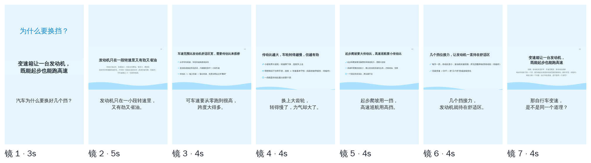

今天学了什么
写好的分镜表，已经是一张剪辑单；
合成视频，就是让 AI 照着它一镜一镜排。
先做无声版，
再配声音。
01
画面照秒数排
每一镜的画面停留多久，就照表里的秒数。PPT 页是横的，放进竖屏时占中间一条，上下的空正好放字幕。
02
字幕就是旁白
旁白一字不改地变成字幕，放在画面下方。没人开声音也能看懂，这在短视频里很常见。
03
先无声，后配音
第一版只要画面和字幕。节奏对了，再考虑配音和音乐；一开始就全加上，哪里不对很难找。
04
抽帧来检查
视频不方便在聊天里看，就让 AI 每镜抽一帧并排给你：哪一镜字幕太长、画面被挡，一眼就看出来。
第三周复盘
这一周从大纲走到 PPT，再走到短视频：同一份内容换了三种样子。每一步都是先说计划、再动手、最后并排看结果，这个顺序本身就值得留下来。
写进 skill 的一块：合成短视频
## 合成短视频 - 照分镜表做：每镜的画面停留时间就是表里的秒数。 - 竖屏 1080×1920；横的 PPT 页放在中间，上下留给字幕。 - 旁白原样做成字幕，放在画面下方，一屏最多两行。 - 第一版只要画面和字幕，不配音、不配乐。 - 做完每镜抽一帧并排给我看，文件放“我的AI练习”，不提交、不推送。
我的练习
把 30 秒脚本做成视频。
用 Day 20 核好时长的分镜表和机械课 PPT，合成一段无声的竖屏短视频，再给第三周做个复盘。
第一步：合成视频
用 Day 20 核好时长的那张分镜表，把“我的AI练习”里的机械课 PPT 合成一段竖屏短视频： - 1080×1920，每镜的画面就是表里写的那一页，停留时间就是表里的秒数 - PPT 页放在画面中间，旁白原样做成字幕放在下方 - 先不配音、不配乐 先说计划，等我说“好”再做。做完每镜抽一帧并排给我看，文件放在“我的AI练习”。
第二步：第三周复盘
回顾第三周（Day 14 到 Day 21），帮我用三句话写个复盘：我学会了什么、哪一步最费劲、下周想多练什么。先列出你看到的事实，再让我挑哪些写进去。
成片 · 28 秒 · 无声

第三周复盘
学会了：先写大纲再做 PPT，用“标题串讲”找出逻辑断在哪；还把这一周的习惯拼成了自己的 PPT 助手 skill。 最费劲：中间停了两周，回来一口气补课；横版 PPT 放进竖屏视频，小字就看不清了。 下周想多练：把自己会的东西做成一个小产品，从“什么信息值钱”开始。
今天的小工具
分镜放映机。
把分镜表贴进来，按“秒数 | 画面 | 旁白”一行一镜。它在竖屏框里按秒数一镜一镜放给你看，字幕跟着旁白走：真做视频之前，先看看节奏对不对。
竖屏预览
0.0 / 0 秒
第 1 镜